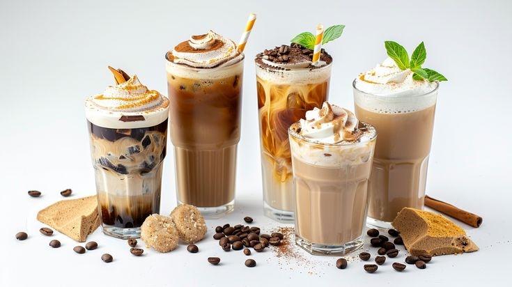

Cerita Usaha
Tentang Kopakopi
Kedai kopi dengan racikan latte kekinian yang cocok untuk menemani waktu santai dan berbagai aktivitas.

Nilai yang Kami Bawa
- Bahan Lokal: Kami memilih biji kopi dan bahan segar dari pemasok sekitar Pekalongan.
- Kesederhanaan: Proses seduh dan penyajian dibuat transparan agar mudah dipahami pelanggan.
- Keramahan: Pelayanan hangat menjadi prioritas dalam setiap kunjungan pelanggan harian.